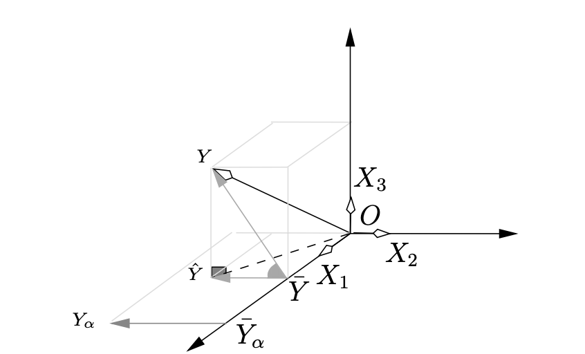

4 Extensions : non-inversibilité et (ou) erreurs corrélées
Exercice 1 (Questions de cours) B, B, B, A
Exercice 2 (Corrélation multiple et hypothèse \(\mathcal{H}_1\))
Montrons que la moyenne empirique de \(X\hat \beta\) vaut \(\bar Y\). Le vecteur moyenne est obtenu en projetant sur \(\mathbf{1}_n\). En effet, comme \[\begin{eqnarray*} P_{\mathbf{1}}&=&\mathbf{1}_n(\mathbf{1}_n'\mathbf{1}_n)^{-1}\mathbf{1}_n'=\frac{1}{n}\mathbf{1}_n\mathbf{1}_n', \end{eqnarray*}\] nous avons, pour une variable \(Z=(Z_1,\dotsc,Z_n)'\), \[\begin{eqnarray*} P_{\mathbf{1}}Z&=&=\frac{1}{n}\mathbf{1}_n \mathbf{1}_n'Z= \frac{1}{n}\mathbf{1}_n\sum_{i=1}^{n}{Z_i}=\bar Z\mathbf{1}_n. \end{eqnarray*}\] Comme \(\mathbf{1}_n\in\Im(X)\), nous avons \[\begin{eqnarray*} \bar Y&=&P_\mathbf{1}Y=P_\mathbf{1}P_XY=P_\mathbf{1}X\hat \beta, \end{eqnarray*}\] c’est-à-dire que la moyenne empirique de \(X\hat \beta\) vaut \(\bar Y\).
Le coefficient de corrélation entre \(\hat Y\) et \(Y\) élevé au carré s’écrit donc \[\begin{eqnarray*} \rho^2(\hat Y,Y)&=&\frac{\langle \hat Y-\bar Y,Y-\bar Y\rangle^2}{\|\hat Y-\bar Y\|^2\|Y-\bar Y\|^2}\\ &=&\frac{\langle \hat Y-\bar Y,Y-\hat Y+\hat Y-\bar Y\rangle^2}{\|\hat Y-\bar Y\|^2\|Y-\bar Y\|^2}\\ &=&\Bigl\{\frac{\langle \hat Y-\bar Y,Y-\hat Y\rangle}{\|\hat Y-\bar Y\|\|Y-\bar Y\|}+\frac{\langle \hat Y-\bar Y,\hat Y-\bar Y\rangle}{\|\hat Y-\bar Y\|\|Y-\bar Y\|}\Bigl\}^2. \end{eqnarray*}\] Comme \((Y-\hat Y)\in\Im(X)^\perp\) et que \((\hat Y-\bar Y)\in\Im(X)\), nous avons \(\langle \hat Y-\bar Y,Y-\hat Y\rangle=0\) et donc \[\begin{eqnarray*} \rho^2(\hat Y,Y)&=&\frac{\|\hat Y-\bar Y\|^2 \|\hat Y-\bar Y\|^2}{\|\hat Y-\bar Y\|^2\|Y-\bar Y\|^2}=\mathop{\mathrm{R^2}}2. \end{eqnarray*}\]
En effectuant le calcul nous trouvons que \(Y-2X_1+2X_2=3\eta\).
En calculant les normes carrées, nous avons \[\begin{eqnarray*} \|X_1\|^2&=&1^2+1^2+1^2=3,\\ \|X_2\|^2&=&1/2+1/2+2=3,\\ \|X_3\|^2&=&3/2+3/2=3. \end{eqnarray*}\] En calculant les produits scalaires, nous avons \[\begin{eqnarray*} \langle X_1,X_2\rangle&=&1\times 1/\sqrt{2}+ 1\times 1/\sqrt{2} +1\times (-\sqrt{2}) =\sqrt{2}-\sqrt{2}=0,\\ \langle X_1,\eta\rangle&=&\sqrt{3}/\sqrt{2}-\sqrt{3}/\sqrt{2}=0,\\ \langle X_2,\eta\rangle&=&1/\sqrt{2}\times\sqrt{3}/\sqrt{2}-1/\sqrt{2}\times\sqrt{3}/\sqrt{2}=0. \end{eqnarray*}\]
La représentation graphique est :

Nous avons ici \(X_1\in\Im(X)\), \(X_2\in\Im(X)\) et \(\eta\in\Im(X)^\perp\), ce qui permet de trouver \(\hat Y\)~: \[\begin{eqnarray*} P_XY&=&P_X(2X_1-2X_2+3\eta)=2P_XX_1 -2P_XX_2+3P_X\eta=\\ &=&2X_1-2X_2=(2-\sqrt{2},2-\sqrt{2},2-2\sqrt{2})'. \end{eqnarray*}\]
Puisque \(\mathbf{1}\) fait partie des variables explicatives, nous avons \[\begin{eqnarray*} \rho(Y,\hat Y)&=&\frac{\langle Y-\bar Y,\hat Y-\bar Y\rangle}{\|\hat Y-\bar Y\|\|Y-\bar Y\|}, \end{eqnarray*}\] ce qui est la définition du cosinus de l’angle entre \(\overrightarrow{\bar YY}\) et \(\overrightarrow{\bar Y\hat Y}\).
Notons par \(Y_\alpha\) le vecteur \(X\alpha\). Sa moyenne vaut \(\bar Y_\alpha\). Nous avons maintenant le cosinus de l’angle entre \(\overrightarrow{\bar YY}\) et \(\overrightarrow{\bar Y_\alpha Y_\alpha}\). Graphiquement, la moyenne de \(Y_\alpha\) est la projection sur \(X_1=\mathbf{1}_3\).
La représentation graphique nous permet de voir que l’angle entre \(\overrightarrow{\bar YY}\) et \(\overrightarrow{\bar Y_\alpha Y_\alpha}\) est le même que celui entre \(\overrightarrow{\bar YY}\) et \(\overrightarrow{\bar Y\hat Y}\). L’angle est minimum (et le cosinus maximum) quand \(\alpha=\hat\beta\) ou pour tout \(\alpha\) tel que \(\overrightarrow{\bar Y_\alpha Y_\alpha}=k\overrightarrow{\bar Y\hat Y}\) avec \(k>0\).
Du fait de l’orthogonalité entre \(X_1\) et \(X_2\), \(\overrightarrow{\bar Y_\alpha Y_\alpha}\) est toujours colinéaire à \(\overrightarrow{\bar Y\hat Y}\), seul le signe change en fonction de l’orientation des vecteurs (même sens ou sens opposé).
Comme \(\rho(X_j;X_k)=1\) alors \(R(X_j;(\mathbf{1},X_j))=1\) et donc puisque la constante fait partie du modèle \(R(X_j;X_{(j)})=1\). L’hypothèse \({\mathcal{H}}_1\) n’est donc pas vérifiée.
Exercice 3 (EQM de la régression Ridge)
Les démonstrations figurent en page 77 : \[\begin{eqnarray*} B(\hat \beta_{ridge}) &=& -\kappa (X'X + \kappa I)^{-1} \beta,\\ V(\hat \beta_{\mathrm{ridge}})&=&\sigma^2(X'X + \kappa I)^{-1}X'X(X'X + \kappa I)^{-1}\\ \mathop{\mathrm{EQM}}(\hat \beta_{\mathrm{ridge}})&=&(X'X + \kappa I)^{-1}\left[\kappa^2\beta \beta'+\sigma^2(X'X) \right](X'X + \kappa I)^{-1}. \end{eqnarray*}\]
Puisque \(X'X=P\mathop{\mathrm{diag}}(\lambda_i) P'\), nous avons \[\begin{eqnarray*} (X'X + \kappa I)&=&P\mathop{\mathrm{diag}}(\lambda_i) P'+ \kappa PP'=P\mathop{\mathrm{diag}}(\lambda_i+\kappa)P'. \end{eqnarray*}\] En se rappelant que \(P^{-1}=P'\), son inverse vaut \[\begin{eqnarray*} (X'X + \kappa I)^{-1}&=&P\mathop{\mathrm{diag}}(1/(\lambda_i+\kappa))P'. \end{eqnarray*}\] Nous avons donc \[\begin{equation*} \begin{split} \mathop{\mathrm{EQM}}(\hat \beta_{\mathrm{ridge}})&=P\mathop{\mathrm{diag}}(\frac{1}{\lambda_i+\kappa})P'\left[\kappa^2\beta \beta'+\sigma^2(X'X) \right]P\mathop{\mathrm{diag}}(\frac{1}{\lambda_i+\kappa})P'\\ &=P\mathop{\mathrm{diag}}(\frac{1}{\lambda_i+\kappa})\left[\kappa^2(P'\beta\beta'P)+\sigma^2 I_p\right]\mathop{\mathrm{diag}}(\frac{1}{\lambda_i+\kappa})P'. \end{split} \end{equation*}\] Nous en déduisons que sa trace vaut \[\begin{equation*} \begin{split} \mathop{\mathrm{tr}}\left\{EQM(\hat \beta_{\mathrm{ridge}})\right\}&=\mathop{\mathrm{tr}}\left\{\mathop{\mathrm{diag}}(\frac{1}{\lambda_i+\kappa})\left[\kappa^2(P'\beta\beta'P)+\sigma^2 I_p\right]\right.\\ &\quad \left.\mathop{\mathrm{diag}}(\frac{1}{\lambda_i+\kappa})P'P\right\}, \end{split} \end{equation*}\] et, comme \(P'P=I_p\), nous avons alors \[\begin{eqnarray*} \mathop{\mathrm{tr}}\left\{EQM(\hat \beta_{\mathrm{ridge}})\right\} &=&\mathop{\mathrm{tr}}\left\{\left[\kappa^2(P'\beta\beta'P)+\sigma^2 I_p\right]\mathop{\mathrm{diag}}(\frac{1}{(\lambda_i+\kappa)^2})\right\}. \end{eqnarray*}\] Le \(i^e\) élément de la diagonale de la matrice \(P'\beta\beta'P\) vaut \([P'\beta]_i^2\). Celui de \(\left[\kappa^2(P'\beta\beta'P)+\sigma^2 I_p\right]\) vaut \(\kappa^2[P'\beta]_i^2+\sigma^2\) et celui de \[\left[\kappa^2(P'\beta\beta'P)+\sigma^2 I_p\right]\mathop{\mathrm{diag}}(\frac{1}{(\lambda_i+\kappa)^2})\] vaut donc \[\kappa^2[P'\beta]_i^2+\sigma^2/(\lambda_i+\kappa)^2.\] On en déduit le résultat annoncé car la trace est la somme des éléments diagonaux d’une matrice.
L’estimateur des MC est non biaisé et son \(\mathop{\mathrm{EQM}}\) vaut sa variance : \[\begin{eqnarray*} \mathop{\mathrm{EQM}}(\hat \beta_{\mathrm{MC}})&=&\sigma^2(X'X)^{-1}. \end{eqnarray*}\] Nous avons alors \[\begin{eqnarray*} \mathop{\mathrm{EQM}}(\hat \beta_{\mathrm{MC}}) \!&=&\!\sigma^2(X'X \!+\! \kappa I)^{-1}(X'X + \kappa I)(X'X)^{-1}\\ \!&=&\!\sigma^2(X'X \!+\! \kappa I)^{-1}(X'X(X'X)^{-1} + \kappa I(X'X)^{-1})\\ \!&=&\!\sigma^2(X'X \!+\! \kappa I)^{-1}(I\!+\!\kappa (X'X)^{-1})(X'X \!+\! \kappa I)(X'X \!+\! \kappa I)^{-1}\\ \!&=&\!\sigma^2(X'X \!+\! \kappa I)^{-1}(X'X\!+\!2 \kappa I \!+\! \kappa^2 (X'X)^{-1})(X'X \!+\! \kappa I)^{-1}. \end{eqnarray*}\]
Le calcul de \(\Delta=\mathop{\mathrm{EQM}}(\hat \beta_{\mathrm{ridge}})- \mathop{\mathrm{EQM}}(\hat \beta_{\mathrm{MC}})\) est immédiat en utilisant l’expression précédente de \(\mathop{\mathrm{EQM}}(\hat \beta_{\mathrm{MC}})\) et celle rappelée en question 1.
En utilisant le théorème proposé avec \(A=(X'X + \kappa I)^{-1}\) et \(B=(\sigma^2(2I_p+\kappa^2(X'X)^{-1})-\kappa\beta\beta')\) nous obtenons le résultat demandé. Cette condition dépend de \(\beta\) qui est inconnu, mais aussi de \(X\), c’est-à-dire des mesures obtenues.
Intéressons-nous à la matrice \(\gamma\gamma'\). Cette matrice est symétrique donc diagonalisable, de valeurs propres positives ou nulles. La somme de ses valeurs propres est égale à la trace de cette matrice \[\begin{eqnarray*} \mathop{\mathrm{tr}}(\gamma\gamma')=\mathop{\mathrm{tr}}(\gamma'\gamma)=\gamma'\gamma. \end{eqnarray*}\] Montrons que cette matrice n’a qu’une seule valeur propre non nulle \(\gamma'\gamma\). Pour cela, considérons le vecteur \(\gamma\in\mathbb R^p\) et montrons qu’il est vecteur propre de \(\gamma\gamma'\) associé à la valeur propre \(\gamma'\gamma\)~: \[\begin{eqnarray*} (\gamma\gamma')\gamma&=&\gamma(\gamma'\gamma)=(\gamma'\gamma)\gamma. \end{eqnarray*}\] Nous avons donc un vecteur propre de \(\gamma\gamma'\) qui est \(\gamma\) associé à la valeur propre \(\gamma'\gamma\). De plus, nous savons que la somme des valeurs propres positives ou nulles de \(\gamma\gamma'\) vaut \(\gamma'\gamma\). Nous en déduisons que les \(p-1\) valeurs propres restantes sont toutes nulles. Nous pouvons donc dire que la matrice \(\gamma\gamma'\) se décompose comme \[\begin{eqnarray*} \gamma\gamma'&=&UDU', \end{eqnarray*}\] où \(U\) est la matrice orthogonale des vecteurs propres normés à l’unité de \(\gamma\gamma'\) et \(D=\mathop{\mathrm{diag}}(\gamma'\gamma,0,\dotsc,0)\). Nous avons donc \[\begin{eqnarray*} I_p-\gamma\gamma'&=&UU' - UDU'=U(\mathop{\mathrm{diag}}(1-\gamma'\gamma,1,\dotsc,1)U'. \end{eqnarray*}\] Les valeurs propres de \(I_p-\gamma\gamma'\) sont donc \(1-\gamma'\gamma,1,\dotsc,1\), qui sont toutes positives ou nulles dès que \(\gamma'\gamma\le 1\).
Une condition pour que \(\sigma^2(2I_p-\kappa\beta\beta')\) soit semi-définie positive est que \((\kappa\beta\beta')\le \sigma^2\) (cf. question précédente) et donc \((\sigma^2(2I_p+\kappa^2(X'X)^{-1})-\kappa\beta\beta')\) est alors la somme de 2 matrices semi-définies positives donc semi-définie positive. Cela implique qu’il s’agit d’une condition suffisante pour que \(\Delta\) soit semi-définie positive.
Nous venons de montrer 2 conditions, l’une nécessaire et suffisante, l’autre suffisante, afin que \(\Delta\) soit semi-définie positive. Cette assertion signifie que, quelle que soit la combinaison linéaire du vecteur de paramètre (par exemple une coordonnée), l’estimateur ridge est meilleur que celui des MC au sens de l’EQM. Cela signifie aussi que, si une de ces conditions est vérifiée, globalement au sens de la trace de l’EQM, l’estimateur ridge est meilleur que celui des MC. Au niveau des conditions, cela permet de trouver la valeur optimale de \(\kappa\). Malheureusement chacune des 2 conditions dépend de la valeur \(\beta\) inconnue et donc n’est pas réellement utilisable en pratique. La condition suffisante procure une amélioration, dans le sens où elle ne dépend pas de \(X\) donc de l’expérience. Le prix à payer est bien sûr qu’il s’agit seulement d’une condition suffisante et donc plus restrictive.
Exercice 4 (Régression pondérée)
Nous souhaitons minimiser \[\begin{eqnarray*} \sum_{i=1}^n \left(y_i-\sum_{j=1}^p \beta_j x_{ij}\right)^2 p_i, \end{eqnarray*}\] où \(p_i\) est un réel positif. Nous pouvons écrire ce critère sous la forme suivante : \[\begin{eqnarray*} \sum_{i=1}^n \left(\sqrt{p_i}y_i-\sum_{j=1}^p \beta_j\sqrt{p_i} x_{ij}\right)^2 = \sum_{i=1}^n \left(y^\star_i-\sum_{j=1}^p \beta_jx_{ij}^\star\right)^2, \end{eqnarray*}\] où \(y^\star_i=\sqrt{p_i}y_i\) et \(x_{ij}^\star = \sqrt{p_i} x_{ij}\).
Notons \(P^{1/2}\) la matrice des poids qui vaut \(P^{1/2}=\mathop{\mathrm{diag}}(\sqrt{p_i})\). Ce dernier critère est un critère des MC avec comme observations \(Y^\star\) et \(X^\star\) où \(Y^\star = P^{1/2} Y\) et \(X^\star = P^{1/2} X\). L’estimateur vaut alors \[\begin{eqnarray*} \hat \beta_{pond} &=& (X^{\star\prime}X^\star)^{-1}X^{\star\prime}Y^\star\\ &=& (X'PX)^{-1}X'PY. \end{eqnarray*}\]
Lorsque nous avons la constante comme seule variable explicative, \(X=\mathbf{1}_n\), et nous avons alors \[\begin{eqnarray*} \hat \beta_{pond} &=&\frac{\sum p_i y_i}{\sum p_i}. \end{eqnarray*}\]
Lorsque les poids sont constants, nous retrouvons, non plus une moyenne pondérée, mais la moyenne usuelle.
Exercice 5 (Gauss-Markov) L’estimateur des MC s’écrit \(\hat \beta_2 = \sum_{i=1}^n p_i y_i,\) avec \(p_i=(x_i-\bar x)/\sum(x_i -\bar x)^2\). Considérons un autre estimateur \(\tilde{\beta_2}\) linéaire en \(y_i\) et sans biais, c’est-à-dire \[\tilde{\beta_2} =\sum_{i=1}^n \lambda_i y_i.\] Montrons que \(\sum \lambda_i=0\) et \(\sum \lambda_i x_i=1\). L’égalité \(\mathbf E(\tilde{\beta_2}) = \beta_1 \sum \lambda_i + \beta_2 \sum \lambda_i x_i + \sum \lambda_i \mathbf E(\varepsilon_i)\) est vraie pour tout \(\beta_2\) et \(\tilde \beta_2\) est sans biais donc \(\mathbf E(\tilde \beta_2)=\beta_2\) pour tout \(\beta_2\), c’est-à-dire que \(\sum \lambda_i=0\) et \(\sum \lambda_i x_i=1\).
Montrons que \(\mathop{\mathrm{V}}(\tilde{\beta_2}) \geq \mathop{\mathrm{V}}(\hat \beta_2)\). \[\begin{eqnarray*} \mathop{\mathrm{V}}(\tilde{\beta_2}) = \mathop{\mathrm{V}}(\tilde{\beta_2}- \hat \beta_2 + \hat \beta_2) =\mathop{\mathrm{V}}(\tilde{\beta_2}- \hat \beta_2)+\mathop{\mathrm{V}}(\hat \beta_2)+ 2\mathop{\mathrm{Cov}}(\tilde{\beta_2}- \hat \beta_2,\hat \beta_2). \end{eqnarray*}\] \[\begin{eqnarray*} \mathop{\mathrm{Cov}}(\tilde{\beta_2}- \hat \beta_2,\hat \beta_2) \!=\!\mathop{\mathrm{Cov}}(\tilde{\beta_2},\hat \beta_2) -\mathop{\mathrm{V}}(-\hat \beta_2) \!=\!\frac{\sigma^2\sum \lambda_i(x_i-\bar x)}{\sum (x_i-\bar x)^2} - \frac{\sigma^2}{\sum (x_i-\bar x)^2} \!=\!0, \end{eqnarray*}\] et donc \[\begin{eqnarray*} \mathop{\mathrm{V}}(\tilde{\beta_2}) = \mathop{\mathrm{V}}(\tilde{\beta_2}- \hat \beta_2)+\mathop{\mathrm{V}}(\hat \beta_2). \end{eqnarray*}\] Une variance est toujours positive et donc \[\begin{eqnarray*} \mathop{\mathrm{V}}(\tilde{\beta_2}) \geq \mathop{\mathrm{V}}(\hat \beta_2). \end{eqnarray*}\] Le résultat est démontré. On obtiendrait la même chose pour \(\hat \beta_1\).
Exercice 6 (Corrélation spatiale)
Écrivons pour la ligne/site \(i\): \[\begin{align*} Y_{i}&=X_{i.}'\beta + \varepsilon_{i} \end{align*}\] et nous savons que \[\begin{align*} \varepsilon_{i}= \rho \sum_{i=1}^n M_{ij} \varepsilon_{j} + \eta_{i} \end{align*}\] Comme quand \(i=j\) on a \(M_{ij}=0\) on en déduit \[\begin{eqnarray*} \varepsilon_i=\rho\sum_{j\ne i,j=1}^{n}{M_{ij} \varepsilon_j} + \eta_i, \end{eqnarray*}\]
Le site \(i\) est expliqué par un modèle de type auto-régression par les autres sites. Le site est très dépendant des sites proches (fort \(M_{ij}\)) et peu ou pas dépendant des autres sites (faible \(M_{ij}\) ou valeur nulle).
On repart de \[\begin{align*} \varepsilon&=\rho M \varepsilon +\eta\\ (I - \rho M)\varepsilon &=\eta\\ \varepsilon&=(I - \rho M)^{-1}\eta=A^{-1}\eta \end{align*}\]
Comme \(\eta\) est gaussien de moyenne nulle et de variance \(\sigma^{2}I\) on a que \(\varepsilon\) est gaussien de moyenne nulle et de variance \[\begin{align*} \mathop{\mathrm{V}}(\varepsilon) &= \mathop{\mathrm{V}}(A^{-1}\eta) = A^{-1} \mathop{\mathrm{V}}(\eta) {A'}^{-1} =\sigma^{2} A^{-1} {A'}^{-1}\\ &=\sigma^{2}\Omega \end{align*}\]
Pour la vraisemblance du modèle trouvons la loi de \(Y=X\beta + \varepsilon\). Comme \(\varepsilon\) est gaussien de moyenne nulle et de variance \(\sigma^{2}\Omega\) on a que \(Y\) gaussien de moyenne \(X\beta\) et de variance \(\sigma^{2}\Omega\). On a donc \[\begin{align*} L(Y,\beta,\sigma^2,\rho)&= \frac{1}{(2\pi)^{n/2}}\frac{1}{|\sigma^{2}\Omega|^{1/2}} \exp\Bigl\{-\frac{1}{2\sigma^2}(Y-X\beta)'\Omega^{-1}(Y-X\beta)\Bigr\} \end{align*}\]
La log-vraisemblance est \[\begin{align*} \mathcal{L}&=-\frac{n}{2}\log (2\pi\sigma^{2}) - \frac{1}{2}\log|\Omega| - \frac{1}{2\sigma^2}(Y-X\beta)'\Omega^{-1}(Y-X\beta) \end{align*}\] La dérivée par rapport à \(\beta\) est \[\begin{align*} \frac{\partial \mathcal{L}}{\partial\beta}&=-\frac{1}{2\sigma^2}X'\Omega^{-1}(Y-X\beta)\\ \end{align*}\] et en l’annulant on a \[\begin{align*} X'\Omega^{-1}Y=X'\Omega^{-1}X\hat\beta \end{align*}\] d’où \[ \begin{eqnarray} \hat \beta&=&(X'\hat \Omega^{-1}X)^{-1}X'\hat \Omega^{-1}Y\nonumber\\ &=&(X'\hat A'\hat AX)^{-1}X'\hat A'\hat AY. \end{eqnarray} \tag{1}\]
La dérivée par rapport à \(\sigma^2\) est \[\begin{align*} \frac{\partial \mathcal{L}}{\partial\sigma^2}&=-\frac{n}{2\sigma^2} + \frac{1}{2\sigma^4}(Y-X\beta)'\Omega^{-1}(Y-X\beta) \end{align*}\] et en l’annulant on a \[ \begin{align} \hat \sigma^2&=\frac{1}{n}(Y-X\hat \beta)'\hat \Omega^{-1} (Y-X\hat \beta)\nonumber\\ &=\frac{1}{n}(Y-X\hat \beta)\hat A'\hat A (Y-X\hat \beta). \end{align} \tag{2}\]
Comme nous savons les valeurs de \(\hat \beta\) comme fonction de \(\rho\) (équation 1) et de \(\hat \sigma^2\) comme fonction de \(\rho\) (équation 2) il suffit de les remplacer dans \(-\mathcal{L}\) et on obtient \[\begin{eqnarray*} h(\hat\rho)\!&=\!&\!\frac{n}{2}\log Y'(I\!-\!X(X'\hat A'\hat AX)^{-1}X'\hat A'\hat A)' \hat A'\hat A(I\!-\!X(X'\hat A'\hat AX)^{-1}X'\hat A'\hat A)Y \\ && \quad - \frac{1}{2}\log|\hat A'\hat A|^2 \end{eqnarray*}\]